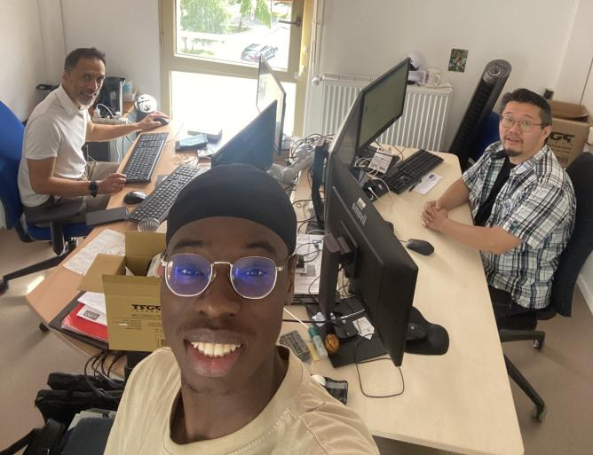

Remerciements
Je tiens à remercier Romuald BEDU qui est chef du service informatique, ainsi que le chef d'équipe Christian ARISTIDE
J'aimerais aussi remercier mes maîtres d'apprentissage CHADUC Jean-Daniel ainsi que RASOLOHERY Falimanentsoa qui ont su m'intégrer au mieux au sein de l'équipe et qui m'ont fait profiter de leurs expériences et de leurs conseils en me mettant le plus à l'aise possible durant ces 6 semaines passées à leurs côtés. et je tiens à remercié Samuel BOISEAU qui m'a aidé lors de la rédaction du blog.
Je tiens également à remercier profondément Ndatte GUEYE qui m'avait aidé à trouver ce stage, et aussi Souhaila pour l'accueil que j'ai reçu au sein de cette unité.